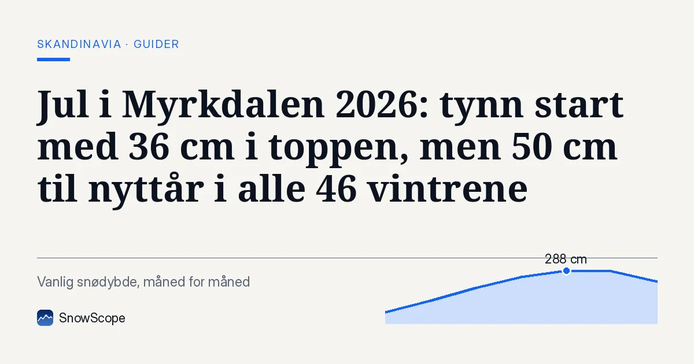

Jul i Myrkdalen 2026: tynn start med 36 cm i toppen, men 50 cm til nyttår i alle 46 vintrene
Myrkdalen har 36 cm snø i toppen fredag 27. november 2026, og det kommer mer: rundt 5 cm søndag og 8 cm mandag. Likevel ligger senteret etter en vanlig senhøst: på 756 m er snødybden 22 cm, mens 75 cm er normalt for datoen.
Se snøprognosen for Myrkdalen direkte i SnowScope-appenSnødybde, puddervarsler og 3D-kartet, gratis.
Snøsituasjonen nå
I toppen: 36 cm. Det har ikke snødd de siste tre dagene, men neste uke ser bedre ut: 13 cm er ventet fram til mandag, og i løpet av sju dager kan toppen få 28 cm. Mandag 30. november bør snødybden i toppen være rundt 41 cm.
Anlegget går fra 446 m i dalbunnen til 1 067 m. Det er lavt sammenlignet med Alpene, men Myrkdalen ligger der vestavêret slipper mest snø, og det gjør hele forskjellen.
Hvorfor senteret ligger etter i år
Høsten har vært mild på Vestlandet, og de første nedbørsrundene kom som regn langt opp i fjellsidene. Det er ikke uvanlig: Myrkdalens snø kommer i store porsjoner, og en eneste kald uke med vestavær kan endre bildet helt.
Historikken viser hvor stort potensialet er. Den mest snørike av 46 vintre, 1989-90, nådde 491 cm; den magreste, 1995-96, 155 cm. I en vanlig vinter ligger det 30 cm eller mer allerede fra begynnelsen av november.
Hva desember pleier å gi
På 756 m er normal snødybde 94 cm 8. desember og 107 cm 15. desember. I 98 % av vintrene lå det mer enn 50 cm allerede 15. desember. Desember er ofte den måneden snødybden dobles her.
Jul og nyttår
Første juledag ligger det normalt 144 cm på 756 m; én jul av fire har mindre enn 105 cm, én av fire mer enn 191 cm. I alle 46 vintrene i vår historikk lå det mer enn 50 cm 1. januar. Myrkdalen er dermed et av de sikreste juleskisentrene i Sør-Norge, også når starten er sein.
Den mest snørike måneden er vanligvis mars, med rundt 280 cm på samme høyde.
Vanlige spørsmål
Når åpner Myrkdalen? Anlegget bestemmer selv åpningsdatoen, men snøen pleier å komme tidlig her: i et normalt år ligger det 30 cm eller mer fra begynnelsen av november. I år er starten seinere, og de første helgene avhenger av kunstsnø og av snøfallene som er meldt til mandag.
Er det nok snø for offpiste? Ikke ennå. Med 22 cm midt i bakken er det for lite til å kjøre utenfor preparerte løyper. Vestlandssnøen bygger seg raskt opp, men den første store dumpen gir ofte ustabile lag.
Hvor mye snø kan det bli i løpet av vinteren? Mye: en normal topp på samme høyde ligger rundt 291 cm, vanligvis i slutten av mars, og de største vintrene har gitt det dobbelte.
Vestlandet mot Østlandet
Det er verdt å merke seg forskjellen mellom vest og øst i år. Myrkdalen ligger etter normalen, men har likevel mer snø enn mange østlandsanlegg. Hafjell og Kvitfjell har for eksempel under 20 cm i toppen. Når vestavêret først kommer, får Vestlandet mest, og Myrkdalen er blant de første som merker det.
For en familie fra Bergen eller Oslo betyr det at Myrkdalen ofte er det beste valget for en tidlig juletur, mens Østlandet kan ta igjen i januar og februar når kulda setter inn for fullt.
Praktisk
Myrkdalen ligger ca. en halvtime fra Voss og to timer fra Bergen. Mange av hyttene ligger ski inn/ski ut, og bygda har blitt et av de mest populære målene for familier fra Bergen i jule- og vinterferien.
Følg snødybden i bunn, midt og topp hver dag på snøsiden for Myrkdalen.
Tips til skiløpere
- Helgen 28. og 29. november: best snø i toppen, og søndag med litt nysnø.
- Bestill jul tidlig; ski inn/ski ut-hyttene går først.
- Ta med vanntett yttertøy: vestlandssnø faller ofte som våt snø i starten av en front.
- Følg værmeldingen for Voss: når nedbøren går over til snø der, får Myrkdalen mye.
- Se mer om snøen på Vestlandet på Bergen-siden og Skandinavia-siden.
Om tallene
Snøtall: SnowScopes snøkart og prognose for i dag og vår historikk over 46 tidligere vintre for hvert skisenter (et anslag for området, ikke skisenterets egen rapport).
Offisielle snøskredvarsler: Varsom (NVE)
Siter denne rapporten
For forskning, undervisning eller presse: tallene og diagrammene kan brukes fritt under CC BY 4.0 med denne kildehenvisningen.
SnowScope (2026), Jul i Myrkdalen 2026: tynn start med 36 cm i toppen, men 50 cm til nyttår i alle 46 vintrene, https://snowscope.app/blog/nb/2026/11/snodybde-myrkdalen-slutten-av-november-2026-og-sjansene-for-jul.html, hentet 2026-11-27
SnowScope (Atlas Labs). (2026, November 27). Jul i Myrkdalen 2026: tynn start med 36 cm i toppen, men 50 cm til nyttår i alle 46 vintrene. SnowScope snow reports. https://snowscope.app/blog/nb/2026/11/snodybde-myrkdalen-slutten-av-november-2026-og-sjansene-for-jul.html
BibTeX
@misc{snowscope2026snodybdemyrkdalenslutten,
author = {{SnowScope (Atlas Labs)}},
title = {Jul i Myrkdalen 2026: tynn start med 36 cm i toppen, men 50 cm til nyttår i alle 46 vintrene},
year = {2026},
month = nov,
howpublished = {\url{https://snowscope.app/blog/nb/2026/11/snodybde-myrkdalen-slutten-av-november-2026-og-sjansene-for-jul.html}},
note = {Published 2026-11-27 16:48 UTC; accessed 2026-11-27}
}· CC BY 4.0 · Metoder, data og verktøy →
Myrkdalen: snø og temperatur etter høyde, i vinter sammenlignet med i fjor (verktøy) →
Følg Myrkdalen
Gratis: en melding når nysnø er på vei, og prognosen hver morgen.